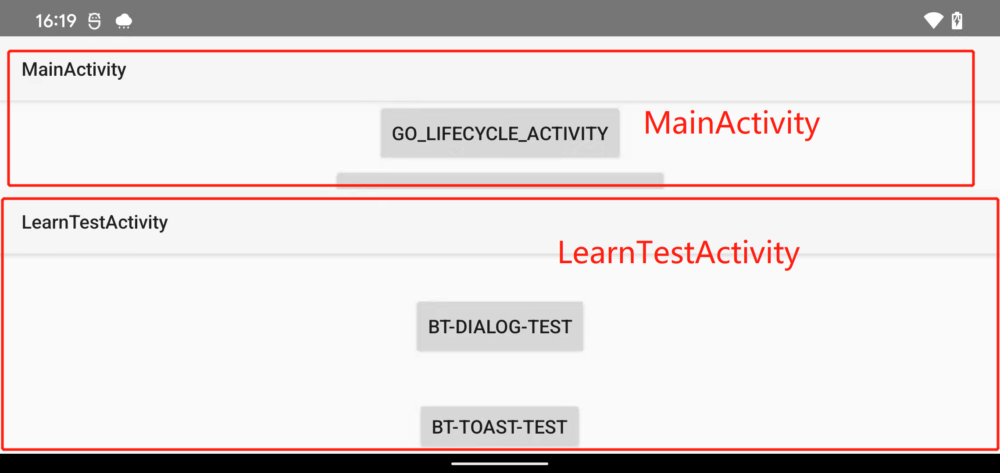

Android 疑难问题解决汇总
App被系统回收之后，再次打开Fragment产生覆盖的问题。
现代码构造
主界面由ViewPager + Fragment构成，ViewPager和Fragment均在Activity的onCreate中进行初始化。
现象
APP长时间运行在后台，当内存不足被系统回收掉之后，此时从任务界面再次启动APP，APP此时的行为，经过初始化界面再次打开主界面。此时判断在代码里面可以判断到，当前所显示的Fragment和新创建的Fragment不是同一个对象😮。
简单分析
经过日志打印分析发现，虽然此时新创建了Fragment对象，但是APP展示在前台使用的还是APP被回收之前的Fragment对象。
源码分析
怎么回事呢？APP进程在后台都已经被回收了，但是Fragment却被保存了。怎么回事呢❓
思考一下，一般情况下，如果我们自己需要在Activity被系统回收的时候，保存东西，那么我们会写在哪里呢❓
没错，重写onSaveInstanceState方法😮。那会不会是系统替我们保存了呢？emm，往上找一找源码吧！
不负所望，最终分别在FragmentActivity和Activity中找到了和Fragment相关的保存。⬇️⬇️⬇️⬇️⬇️⬇️

而这两个地方保存的key分别是android:support:fragments与android:fragments。分析到这里就可以解决问题了，还需要更深入的分析，请看最后面的额外分析。下面先看解决方案。
解决方案
既然系统帮我们保存了，但是我希望每次启动Activity都使用新创建的Fragment，所以最简单的方案就是，将保存的Fragment置null。
方案一
protected void onSaveInstanceState( Bundle outState) { super.onSaveInstanceState(outState); //直接将保存的`Fragment`置null outState.putParcelable("android:support:fragments", null); outState.putParcelable("android:fragments",null); }那么还有更狠一点的方案，如果你确定只要Activity被回收之后，就全部重来，不进行状态保存，那么直接清除Bundle即可。简单粗暴😂
方案二
xxxxxxxxxx@Overrideprotected void onSaveInstanceState(@NonNull Bundle outState) {super.onSaveInstanceState(outState);outState.clear();}
经测试，两种处理方案，均可以完美处理Fragment对象覆盖的问题😎。看到这里本篇博客就完了，下面是额外的源码分析，感兴趣的话，继续看下去吧🙆♀️
额外分析
下面进行额外分析，系统是如何将保存的Fragment进行复用了呢❓
好，首先先看一下保存的mFragments.saveAllState()返回的Parcelable是个什么东西。点进去瞅瞅👀
xxxxxxxxxxFragmentController 类public Parcelable saveAllState() { return mHost.mFragmentManager.saveAllState();}emm，上面的代码简单分析一下，mHost指的是在FragmentActivity里面的内部类HostCallbacks，mFragmentManager指的是FragmentManagerImpl(这里的分析很简单，大家自己跟一下代码就可以找到了)。所以最终调用到了FragmentManagerImpl的saveAllState()方法。
xFragmentManagerImplParcelable saveAllState() { ... ArrayList<FragmentState> active = new ArrayList<>(size); boolean haveFragments = false; for (Fragment f : mActive.values()) { ... active.add(fs); } ... //最终返回了FragmentManagerState 而 FragmentManagerState里面包含了FragmentState FragmentManagerState fms = new FragmentManagerState(); fms.mActive = active; ... return fms; ...}省略了一些非核心的代码，现在可以很直观的看出来最终返回了FragmentManagerState，而FragmentManagerState里面包含了FragmentState，所以跟进来看一下FragmentState是什么东西。
xxxxxxxxxxfinal class FragmentState implements Parcelable { final String mClassName; final String mWho; final boolean mFromLayout; final int mFragmentId; final int mContainerId; final String mTag; ... Bundle mSavedFragmentState; Fragment mInstance; ...可以很直观的看到，这玩意其实就是一个实体类，实现了Parcelable，里面包含了Fragment的实例以及其相关的各种信息。
所以，关于保存总结一下，Fragment会以FragmentState的形式形成集合，放到FragmentManagerState中最终返回出去，通过onSaveInstanceState保存到Bundle中。
那么在哪里恢复呢？我们在onCreate中找一下。
xxxxxxxxxx protected void onCreate( Bundle savedInstanceState) { if (savedInstanceState != null) { Parcelable p = savedInstanceState.getParcelable(FRAGMENTS_TAG); mFragments.restoreSaveState(p); ... mFragments.dispatchCreate(); }有两个很关键的方法，restoreSaveState和dispatchCreate，通过上面的分析，我们直到这里调用到了FragmentManagerImpl里面对应的方法，我们找一下
xxxxxxxxxx FragmentManagerImpl void restoreSaveState(Parcelable state) { //这里判断，如果获取为null的话，则return了，所以我们的解决方案里面最后传入null，这里就不会走了，也可以在调用onCreate的super之前传入null，也可以自己给fragment设置tag，尝试自己获取恢复的fragment，总之，直到原理之后，怎么样都好解决。 if (state == null) return; FragmentManagerState fms = (FragmentManagerState)state; if (fms.mActive == null) return; for (Fragment f : mNonConfig.getRetainedFragments()) { if (DEBUG) Log.v(TAG, "restoreSaveState: re-attaching retained " + f); FragmentState fs = null; for (FragmentState fragmentState : fms.mActive) { ... public void dispatchCreate() { ... dispatchStateChange(Fragment.CREATED); } private void dispatchStateChange(int nextState) { try { mExecutingActions = true; moveToState(nextState, false); } finally { mExecutingActions = false; } execPendingActions(); }这一块代码简化一下很简单，首先调用restoreSaveState，拿到FragmentManagerState进而拿到FragmentState。然后恢复所有的Fragment。之后调用了dispatchCreate，传入了CREATED调用moveToState方法，开始进行我们熟知的Fragment生命周期调用。
这里稍微插一句，可以看到restoreSaveState方法入口直接进行了判断，如果获取为null的话，则return了，所以我们的解决方案里面最后传入null，方法就不会走了；也可以在调用onCreate的super之前传入null；也可以自己给fragment设置tag，尝试自己获取恢复的fragment。总之，知道原理之后，怎么样都好解决。😎
以横屏启动Activity，之前Activity的生命周期重走了，跟随设置了横屏。
现代码构造
以下为写的测试界面。
写了两个Activity，一个叫MainActivity；另一个叫LearnTestActivity。
通过MainActivity启动LearnTestActivity，且在LearnTestActivity的onCreate方法中设置为横屏模式。
xxxxxxxxxx LearnTestActivity override fun onCreate(savedInstanceState: Bundle?) { super.onCreate(savedInstanceState) //设置为横屏模式 requestedOrientation = ActivityInfo.SCREEN_ORIENTATION_REVERSE_LANDSCAPE }两个界面均进行生命周期打印。
xxxxxxxxxx MainActivity lifecycle.addObserver(object : LifecycleEventObserver { override fun onStateChanged(source: LifecycleOwner, event: Lifecycle.Event) { "AllLifecycle-MainActivity${event.name}".toLogI() } }) LearnTestActivity lifecycle.addObserver(object : LifecycleEventObserver { override fun onStateChanged(source: LifecycleOwner, event: Lifecycle.Event) { "AllLifecycle-LearnTestActivity${event.name}".toLogI() } })现象
当我从MainActivity开启LearnTestActivity，理论上MainActivity生命周期会执行到onStop，不会重建。
可是真实的项目上面MainActivity生命周期却进行了重建，类似下面的效果：
xxxxxxxxxxAllLifecycle-MainActivityON_PAUSEAllLifecycle-LearnTestActivityON_CREATEAllLifecycle-LearnTestActivityON_STARTAllLifecycle-LearnTestActivityON_RESUMEAllLifecycle-LearnTestActivityON_PAUSEAllLifecycle-LearnTestActivityON_STOPAllLifecycle-LearnTestActivityON_DESTROYAllLifecycle-LearnTestActivityON_CREATEAllLifecycle-LearnTestActivityON_STARTAllLifecycle-LearnTestActivityON_RESUMEAllLifecycle-MainActivityON_STOPAllLifecycle-MainActivityON_DESTROYAllLifecycle-MainActivityON_CREATEAllLifecycle-MainActivityON_STARTAllLifecycle-MainActivityON_RESUMEAllLifecycle-MainActivityON_PAUSE因为LearnTestActivity的横屏是在onCreate中进行设置的，且默认启动是竖屏，所以对于LearnTestActivity来说，它的生命周期重新走一遍这是不稀奇的。
但是注意看MainActivity为什么生命周期重走了呢？而且直走到了onPause理论上应该是到onStop的呀。
原因分析
当时在项目中发现这个问题，也是花了一点时间去排查定位的，这里就不饶圈子了，原因就在于，设置了LearnTestActivit的窗口是透明。
也就是给LearnTestActivit的设置主题style中有<item name="android:windowIsTranslucent">true</item>。
其实如果理解下来就是，如果设置了窗口透明，则对于上个Activity来说就是虽然失去了焦点但是还是可见的，对应onPause状态。对于可见怎么理解呢？比如我设置LearnTestActivity高度为百分之六十，且偏向底部。
xxxxxxxxxx //在onCreate中调用，将Activity的高度设置为手机的百分之六十 val window = window val lp: WindowManager.LayoutParams = window.attributes lp.height = (obtainPhoneCurrentHeight(this) * 0.6).toInt() lp.gravity = Gravity.BOTTOM window.attributes = lp如下图所示，我们打开了LearnTestActivity但是依旧可以看到MainActivity。

如果不设置<item name="android:windowIsTranslucent">true</item>，则LearnTestActivity则是黑色的，看不到MainActivity。这里就不贴图了。
所以，因为依旧可见，所以MainActivity就会跟随设置横屏。
总结
以横屏启动Activity，上一个Activity的生命周期竟然重走的根本原因，通过上面的分析相信大家已经很清楚了吧。
既然知道了原因，解决起来也很简单，只需要去除<item name="android:windowIsTranslucent">true</item>或者设置android:windowIsTranslucent为false即可。因为我们压根没有窗口透明的需求......